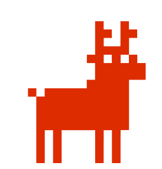

WEMULCreatividad estratégica para transformar marcas, audiencias y archivo sonoro en nuevos formatos audiovisuales.
Combinamos innovación, estrategia y experiencia digital para transformar ideas en resultados.
Casos que combinan creatividad, estrategia, contenido y crecimiento digital.
Liderazgo global en su categoría.
El canal de YouTube de retail más grande del mundo.
Gracias al éxito de esta estrategia, Sodimac ha recibido múltiples reconocimientos de YouTube. Hoy se extiende, también con resultados explosivos, a nuevas marcas y plataformas.
De personajes históricos a protagonistas digitales.
Optimizando resultados y reduciendo costos de producción, superaron incluso a marcas tan grandes como Coca-Cola o Pepsi.
Una estrategia integral para selecciones nacionales.
Nuestros casos de éxito nos permitieron diseñar, por primera vez en su historia, una estrategia comunicacional integral para todas las selecciones nacionales de fútbol.
Eficacia creativa reconocida.
Diseñamos para Coca-Cola una campaña basada en el videojuego League of Legends y conseguimos el máximo galardón de la eficacia publicitaria en Chile.
Hemos creado numerosas piezas virales estrenadas por nuestras redes o las de nuestros clientes.
Además de las acciones que desarrollamos para marcas, tenemos una red de canales propios. Este laboratorio nos permite experimentar, aprender y amplificar nuestro trabajo.
Somos un aliado estratégico capaz de aportar creatividad, innovación y experiencia.
Una oportunidad para transformar el valor histórico, emocional y comercial de las marcas radiales de PRISA en nuevos formatos audiovisuales, digitales y monetizables.
Archivo sonoro convertido en cápsulas audiovisuales premium.
Una señal continua que transforma la memoria radial en una experiencia audiovisual always-on.
Archivo sonoro con nueva vida digital.
Tomar los mejores clips históricos —historias ya seleccionadas, probadas y con buen rendimiento en redes— y transformarlos en cápsulas audiovisuales premium.
El formato actual ya funciona: audio original, gráfica simple y ondas de sonido. Evolucionamos ese activo hacia una versión más visual, distintiva y monetizable.
El Rumpi y la persona que llama, representados como títeres reales con lip sync sobre el audio original, apoyados con escenas IA para una narrativa cinematográfica y compartible.
Seleccionar los 8 mejores clips en base a su rendimiento histórico en redes sociales y producir una nueva versión audiovisual de cada uno.
Revalorizar archivo existente, aumentar presencia en video digital, abrir nuevas oportunidades de monetización y conectar una marca radial histórica con audiencias actuales.
Una serie corta, reconocible y escalable, que convierte historias radiales icónicas en contenido premium para YouTube, Facebook, Instagram, TikTok e integraciones comerciales.
El REC de la radio.
La audiencia ya entiende el código: señales nostálgicas, archivo, contenido de fondo y consumo always-on.
La TV ya lo resolvió con REC o TVN Play; las plataformas, con el live continuo lineal.
La radio tiene la oportunidad abierta: un live continuo en YouTube con potencial de escalar a señal de TV, CTV o FAST channel.
Audio histórico + visual continuo + programación lineal + metadata en pantalla
Convierte programas, entrevistas, rankings, especiales y momentos históricos en una señal curada, de bajo costo y alta familiaridad. Nuevo inventario digital, televisivo y comercial.
Playas, ciudades, carreteras, nidos de animales, calles icónicas o paisajes contemplativos.
Puntos del país asociados a marcas, estados de ánimo, décadas o territorios editoriales.
"Cámara en vivo desde el verano de 1998". "Una disquería que ya no existe". "Backstage de un festival imposible".
PRISA Media ya tiene marcas, voces, historias, audiencias y memoria cultural. Wemul aporta creatividad estratégica, dirección de arte, producción audiovisual, uso aplicado de IA y experiencia en crecimiento digital.
Archivo radial convertido en contenido premium
Memoria sonora convertida en inventario digital
Marcas históricas convertidas en nuevos formatos audiovisuales